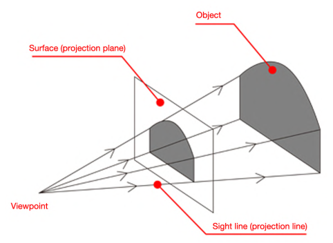

Perspective Imaging
Modeling projection – coordinate system
Use the pin-hole model as an approximation.
Put the optical center (Center of Projection) at the origin
Put the image plane (Projection Plane) in front of the Center of Projection
The camera looks down the negative z-axis, and the image plane has (0, 0) in the center, not the top-left corner.
